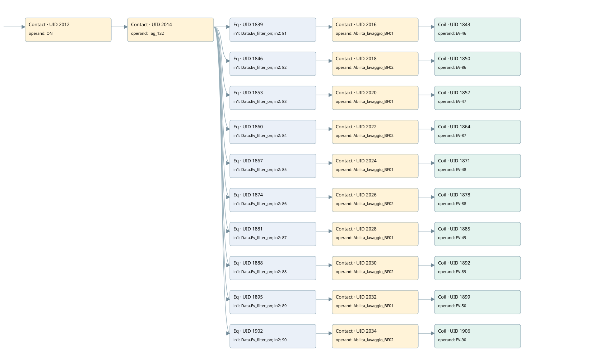

wash filter
filter · 검색 색인 순서 17 · 원본 내부 NID 추정 17
백업 PLF 원본의 2747352 바이트 위치에서 복원한 XML. 검색 문서 1898의 객체 키 161022004411000000000000와 연결했다. 이름 해석 42/42개. 남은 RefId는 상수 또는 미해석 참조다.
연결 구조 다시 그리기
원본 Part/PCon/Wire를 이용한 연결도다. TIA 화면의 래더 배치 또는 실행 결과를 재현한 그림은 아니다. 핀 연결은 아래 표와 원본 XML을 기준으로 읽는다. 노드 위에 마우스를 두면 피연산자 이름을 볼 수 있다.

접점·코일·블록과 피연산자
| Part UID | Gate | Negated 핀 | 연결 피연산자 |
|---|---|---|---|
| 2012 | Contact | operand = ON | |
| 2014 | Contact | operand = Tag_132 | |
| 1839 | Eq | in1 = Data.Ev_filter_on; in2 = 81 | |
| 2016 | Contact | operand = Abilita_lavaggio_BF01 | |
| 1843 | Coil | operand = EV-46 | |
| 1846 | Eq | in1 = Data.Ev_filter_on; in2 = 82 | |
| 2018 | Contact | operand = Abilita_lavaggio_BF02 | |
| 1850 | Coil | operand = EV-86 | |
| 1853 | Eq | in1 = Data.Ev_filter_on; in2 = 83 | |
| 2020 | Contact | operand = Abilita_lavaggio_BF01 | |
| 1857 | Coil | operand = EV-47 | |
| 1860 | Eq | in1 = Data.Ev_filter_on; in2 = 84 | |
| 2022 | Contact | operand = Abilita_lavaggio_BF02 | |
| 1864 | Coil | operand = EV-87 | |
| 1867 | Eq | in1 = Data.Ev_filter_on; in2 = 85 | |
| 2024 | Contact | operand = Abilita_lavaggio_BF01 | |
| 1871 | Coil | operand = EV-48 | |
| 1874 | Eq | in1 = Data.Ev_filter_on; in2 = 86 | |
| 2026 | Contact | operand = Abilita_lavaggio_BF02 | |
| 1878 | Coil | operand = EV-88 | |
| 1881 | Eq | in1 = Data.Ev_filter_on; in2 = 87 | |
| 2028 | Contact | operand = Abilita_lavaggio_BF01 | |
| 1885 | Coil | operand = EV-49 | |
| 1888 | Eq | in1 = Data.Ev_filter_on; in2 = 88 | |
| 2030 | Contact | operand = Abilita_lavaggio_BF02 | |
| 1892 | Coil | operand = EV-89 | |
| 1895 | Eq | in1 = Data.Ev_filter_on; in2 = 89 | |
| 2032 | Contact | operand = Abilita_lavaggio_BF01 | |
| 1899 | Coil | operand = EV-50 | |
| 1902 | Eq | in1 = Data.Ev_filter_on; in2 = 90 | |
| 2034 | Contact | operand = Abilita_lavaggio_BF02 | |
| 1906 | Coil | operand = EV-90 |
접점 경로를 펼친 조건식
Contact·O/A·비교기의 원본 연결을 읽기 쉽게 펼친 보조 해석이다. POWER는 전원 레일 시작을 뜻한다. 호출 블록·에지·타이머의 내부 동작과 다중 쓰기 순서는 이 표로 실행 검증하지 않았다. 미해석 핀과 RefId는 원문 연결표에서 확인한다.
| UID | 동작 | 대상 | 원본 접점 경로 | 내용 |
|---|---|---|---|---|
| 1843 | Coil | EV-46 | (((ON AND Tag_132) AND [Data.Ev_filter_on = 81]) AND Abilita_lavaggio_BF01) | 조건에 따른 Coil 기록 |
| 1850 | Coil | EV-86 | (((ON AND Tag_132) AND [Data.Ev_filter_on = 82]) AND Abilita_lavaggio_BF02) | 조건에 따른 Coil 기록 |
| 1857 | Coil | EV-47 | (((ON AND Tag_132) AND [Data.Ev_filter_on = 83]) AND Abilita_lavaggio_BF01) | 조건에 따른 Coil 기록 |
| 1864 | Coil | EV-87 | (((ON AND Tag_132) AND [Data.Ev_filter_on = 84]) AND Abilita_lavaggio_BF02) | 조건에 따른 Coil 기록 |
| 1871 | Coil | EV-48 | (((ON AND Tag_132) AND [Data.Ev_filter_on = 85]) AND Abilita_lavaggio_BF01) | 조건에 따른 Coil 기록 |
| 1878 | Coil | EV-88 | (((ON AND Tag_132) AND [Data.Ev_filter_on = 86]) AND Abilita_lavaggio_BF02) | 조건에 따른 Coil 기록 |
| 1885 | Coil | EV-49 | (((ON AND Tag_132) AND [Data.Ev_filter_on = 87]) AND Abilita_lavaggio_BF01) | 조건에 따른 Coil 기록 |
| 1892 | Coil | EV-89 | (((ON AND Tag_132) AND [Data.Ev_filter_on = 88]) AND Abilita_lavaggio_BF02) | 조건에 따른 Coil 기록 |
| 1899 | Coil | EV-50 | (((ON AND Tag_132) AND [Data.Ev_filter_on = 89]) AND Abilita_lavaggio_BF01) | 조건에 따른 Coil 기록 |
| 1906 | Coil | EV-90 | (((ON AND Tag_132) AND [Data.Ev_filter_on = 90]) AND Abilita_lavaggio_BF02) | 조건에 따른 Coil 기록 |
원본 배선 연결
| Wire UID | 동일 Wire 연결 끝점 |
|---|---|
| 2036 | Powerrail {} ↔ Part 2012.in |
| 1949 | ORef 1907 (ON) ↔ Part 2012.operand |
| 2013 | Part 2012.out ↔ Part 2014.in |
| 1950 | ORef 1908 (Tag_132) ↔ Part 2014.operand |
| 2015 | Part 2014.out ↔ Part 1839.pre ↔ Part 1846.pre ↔ Part 1853.pre ↔ Part 1860.pre ↔ Part 1867.pre ↔ Part 1874.pre ↔ Part 1881.pre ↔ Part 1888.pre ↔ Part 1895.pre ↔ Part 1902.pre |
| 1951 | ORef 1909 (Data.Ev_filter_on) ↔ Part 1839.in1 |
| 1952 | ORef 1910 (81) ↔ Part 1839.in2 |
| 1953 | Part 1839.out ↔ Part 2016.in |
| 1954 | ORef 1911 (Abilita_lavaggio_BF01) ↔ Part 2016.operand |
| 2017 | Part 2016.out ↔ Part 1843.in |
| 1956 | ORef 1912 (EV-46) ↔ Part 1843.operand |
| 1957 | ORef 1913 (Data.Ev_filter_on) ↔ Part 1846.in1 |
| 1958 | ORef 1914 (82) ↔ Part 1846.in2 |
| 1959 | Part 1846.out ↔ Part 2018.in |
| 1960 | ORef 1915 (Abilita_lavaggio_BF02) ↔ Part 2018.operand |
| 2019 | Part 2018.out ↔ Part 1850.in |
| 1962 | ORef 1916 (EV-86) ↔ Part 1850.operand |
| 1963 | ORef 1917 (Data.Ev_filter_on) ↔ Part 1853.in1 |
| 1964 | ORef 1918 (83) ↔ Part 1853.in2 |
| 1965 | Part 1853.out ↔ Part 2020.in |
| 1966 | ORef 1919 (Abilita_lavaggio_BF01) ↔ Part 2020.operand |
| 2021 | Part 2020.out ↔ Part 1857.in |
| 1968 | ORef 1920 (EV-47) ↔ Part 1857.operand |
| 1969 | ORef 1921 (Data.Ev_filter_on) ↔ Part 1860.in1 |
| 1970 | ORef 1922 (84) ↔ Part 1860.in2 |
| 1971 | Part 1860.out ↔ Part 2022.in |
| 1972 | ORef 1923 (Abilita_lavaggio_BF02) ↔ Part 2022.operand |
| 2023 | Part 2022.out ↔ Part 1864.in |
| 1974 | ORef 1924 (EV-87) ↔ Part 1864.operand |
| 1975 | ORef 1925 (Data.Ev_filter_on) ↔ Part 1867.in1 |
| 1976 | ORef 1926 (85) ↔ Part 1867.in2 |
| 1977 | Part 1867.out ↔ Part 2024.in |
| 1978 | ORef 1927 (Abilita_lavaggio_BF01) ↔ Part 2024.operand |
| 2025 | Part 2024.out ↔ Part 1871.in |
| 1980 | ORef 1928 (EV-48) ↔ Part 1871.operand |
| 1981 | ORef 1929 (Data.Ev_filter_on) ↔ Part 1874.in1 |
| 1982 | ORef 1930 (86) ↔ Part 1874.in2 |
| 1983 | Part 1874.out ↔ Part 2026.in |
| 1984 | ORef 1931 (Abilita_lavaggio_BF02) ↔ Part 2026.operand |
| 2027 | Part 2026.out ↔ Part 1878.in |
| 1986 | ORef 1932 (EV-88) ↔ Part 1878.operand |
| 1987 | ORef 1933 (Data.Ev_filter_on) ↔ Part 1881.in1 |
| 1988 | ORef 1934 (87) ↔ Part 1881.in2 |
| 1989 | Part 1881.out ↔ Part 2028.in |
| 1990 | ORef 1935 (Abilita_lavaggio_BF01) ↔ Part 2028.operand |
| 2029 | Part 2028.out ↔ Part 1885.in |
| 1992 | ORef 1936 (EV-49) ↔ Part 1885.operand |
| 1993 | ORef 1937 (Data.Ev_filter_on) ↔ Part 1888.in1 |
| 1994 | ORef 1938 (88) ↔ Part 1888.in2 |
| 1995 | Part 1888.out ↔ Part 2030.in |
| 1996 | ORef 1939 (Abilita_lavaggio_BF02) ↔ Part 2030.operand |
| 2031 | Part 2030.out ↔ Part 1892.in |
| 1998 | ORef 1940 (EV-89) ↔ Part 1892.operand |
| 1999 | ORef 1941 (Data.Ev_filter_on) ↔ Part 1895.in1 |
| 2000 | ORef 1942 (89) ↔ Part 1895.in2 |
| 2001 | Part 1895.out ↔ Part 2032.in |
| 2002 | ORef 1943 (Abilita_lavaggio_BF01) ↔ Part 2032.operand |
| 2033 | Part 2032.out ↔ Part 1899.in |
| 2004 | ORef 1944 (EV-50) ↔ Part 1899.operand |
| 2005 | ORef 1945 (Data.Ev_filter_on) ↔ Part 1902.in1 |
| 2006 | ORef 1946 (90) ↔ Part 1902.in2 |
| 2007 | Part 1902.out ↔ Part 2034.in |
| 2008 | ORef 1947 (Abilita_lavaggio_BF02) ↔ Part 2034.operand |
| 2035 | Part 2034.out ↔ Part 1906.in |
| 2010 | ORef 1948 (EV-90) ↔ Part 1906.operand |
식별자 해석 근거 42개
| ORef UID | RefId | 이름 | IdentXmlPart 파일 | 해석 방법 |
|---|---|---|---|---|
| 1907 | 52 | ON | 0594-IdentXmlPart.xml | UID/RID + search-text + NID agreement |
| 1908 | 61 | Tag_132 | 0594-IdentXmlPart.xml | UID/RID + search-text + NID agreement |
| 1909 | 3 | Data.Ev_filter_on | 0596-IdentXmlPart.xml | UID/RID + search-text + NID agreement |
| 1910 | 230 | 81 | 0597-IdentXmlPart.xml | literal candidate: UID/RID/NID + nearby named declarations + search-text agreement |
| 1911 | 63 | Abilita_lavaggio_BF01 | 0598-IdentXmlPart.xml | UID/RID + search-text + NID agreement |
| 1912 | 231 | EV-46 | 0594-IdentXmlPart.xml | UID/RID + search-text + NID agreement |
| 1913 | 3 | Data.Ev_filter_on | 0596-IdentXmlPart.xml | UID/RID + search-text + NID agreement |
| 1914 | 232 | 82 | 0597-IdentXmlPart.xml | literal candidate: UID/RID/NID + nearby named declarations + search-text agreement |
| 1915 | 65 | Abilita_lavaggio_BF02 | 0598-IdentXmlPart.xml | UID/RID + search-text + NID agreement |
| 1916 | 233 | EV-86 | 0594-IdentXmlPart.xml | UID/RID + search-text + NID agreement |
| 1917 | 3 | Data.Ev_filter_on | 0596-IdentXmlPart.xml | UID/RID + search-text + NID agreement |
| 1918 | 234 | 83 | 0597-IdentXmlPart.xml | literal candidate: UID/RID/NID + nearby named declarations + search-text agreement |
| 1919 | 63 | Abilita_lavaggio_BF01 | 0598-IdentXmlPart.xml | UID/RID + search-text + NID agreement |
| 1920 | 235 | EV-47 | 0594-IdentXmlPart.xml | UID/RID + search-text + NID agreement |
| 1921 | 3 | Data.Ev_filter_on | 0596-IdentXmlPart.xml | UID/RID + search-text + NID agreement |
| 1922 | 236 | 84 | 0597-IdentXmlPart.xml | literal candidate: UID/RID/NID + nearby named declarations + search-text agreement |
| 1923 | 65 | Abilita_lavaggio_BF02 | 0598-IdentXmlPart.xml | UID/RID + search-text + NID agreement |
| 1924 | 237 | EV-87 | 0594-IdentXmlPart.xml | UID/RID + search-text + NID agreement |
| 1925 | 3 | Data.Ev_filter_on | 0596-IdentXmlPart.xml | UID/RID + search-text + NID agreement |
| 1926 | 238 | 85 | 0597-IdentXmlPart.xml | literal candidate: UID/RID/NID + nearby named declarations + search-text agreement |
| 1927 | 63 | Abilita_lavaggio_BF01 | 0598-IdentXmlPart.xml | UID/RID + search-text + NID agreement |
| 1928 | 239 | EV-48 | 0594-IdentXmlPart.xml | UID/RID + search-text + NID agreement |
| 1929 | 3 | Data.Ev_filter_on | 0596-IdentXmlPart.xml | UID/RID + search-text + NID agreement |
| 1930 | 240 | 86 | 0597-IdentXmlPart.xml | literal candidate: UID/RID/NID + nearby named declarations + search-text agreement |
| 1931 | 65 | Abilita_lavaggio_BF02 | 0598-IdentXmlPart.xml | UID/RID + search-text + NID agreement |
| 1932 | 241 | EV-88 | 0594-IdentXmlPart.xml | UID/RID + search-text + NID agreement |
| 1933 | 3 | Data.Ev_filter_on | 0596-IdentXmlPart.xml | UID/RID + search-text + NID agreement |
| 1934 | 242 | 87 | 0597-IdentXmlPart.xml | literal candidate: UID/RID/NID + nearby named declarations + search-text agreement |
| 1935 | 63 | Abilita_lavaggio_BF01 | 0598-IdentXmlPart.xml | UID/RID + search-text + NID agreement |
| 1936 | 243 | EV-49 | 0594-IdentXmlPart.xml | UID/RID + search-text + NID agreement |
| 1937 | 3 | Data.Ev_filter_on | 0596-IdentXmlPart.xml | UID/RID + search-text + NID agreement |
| 1938 | 244 | 88 | 0597-IdentXmlPart.xml | literal candidate: UID/RID/NID + nearby named declarations + search-text agreement |
| 1939 | 65 | Abilita_lavaggio_BF02 | 0598-IdentXmlPart.xml | UID/RID + search-text + NID agreement |
| 1940 | 245 | EV-89 | 0594-IdentXmlPart.xml | UID/RID + search-text + NID agreement |
| 1941 | 3 | Data.Ev_filter_on | 0596-IdentXmlPart.xml | UID/RID + search-text + NID agreement |
| 1942 | 246 | 89 | 0597-IdentXmlPart.xml | literal candidate: UID/RID/NID + nearby named declarations + search-text agreement |
| 1943 | 63 | Abilita_lavaggio_BF01 | 0598-IdentXmlPart.xml | UID/RID + search-text + NID agreement |
| 1944 | 247 | EV-50 | 0594-IdentXmlPart.xml | UID/RID + search-text + NID agreement |
| 1945 | 3 | Data.Ev_filter_on | 0596-IdentXmlPart.xml | UID/RID + search-text + NID agreement |
| 1946 | 84 | 90 | 0597-IdentXmlPart.xml | literal candidate: UID/RID/NID + nearby named declarations + search-text agreement |
| 1947 | 65 | Abilita_lavaggio_BF02 | 0598-IdentXmlPart.xml | UID/RID + search-text + NID agreement |
| 1948 | 248 | EV-90 | 0594-IdentXmlPart.xml | UID/RID + search-text + NID agreement |
검색 코드 보조 자료
참조 명칭을 찾기 위한 자료이며 실행 순서나 AND/OR 관계는 위 연결표로 확인한다.
"on" "tag_132" "data".ev_filter_on 81 #abilita_lavaggio_bf01 "ev-46" "data".ev_filter_on 82 #abilita_lavaggio_bf02 "ev-86" "data".ev_filter_on 83 #abilita_lavaggio_bf01 "ev-47" "data".ev_filter_on 84 #abilita_lavaggio_bf02 "ev-87" "data".ev_filter_on 85 #abilita_lavaggio_bf01 "ev-48" "data".ev_filter_on 86 #abilita_lavaggio_bf02 "ev-88" "data".ev_filter_on 87 #abilita_lavaggio_bf01 "ev-49" "data".ev_filter_on 88 #abilita_lavaggio_bf02 "ev-89" "data".ev_filter_on 89 #abilita_lavaggio_bf01 "ev-50" "data".ev_filter_on 90 #abilita_lavaggio_bf02 "ev-90"